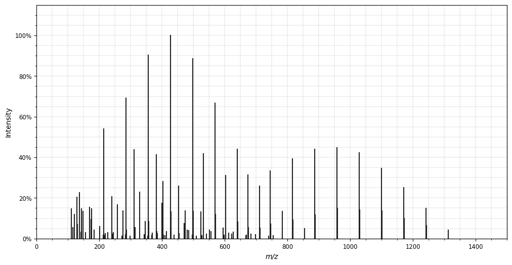
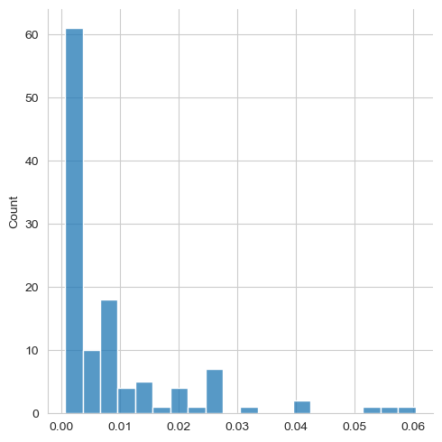
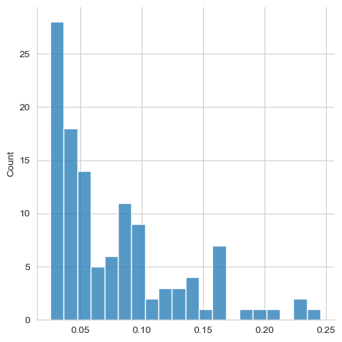
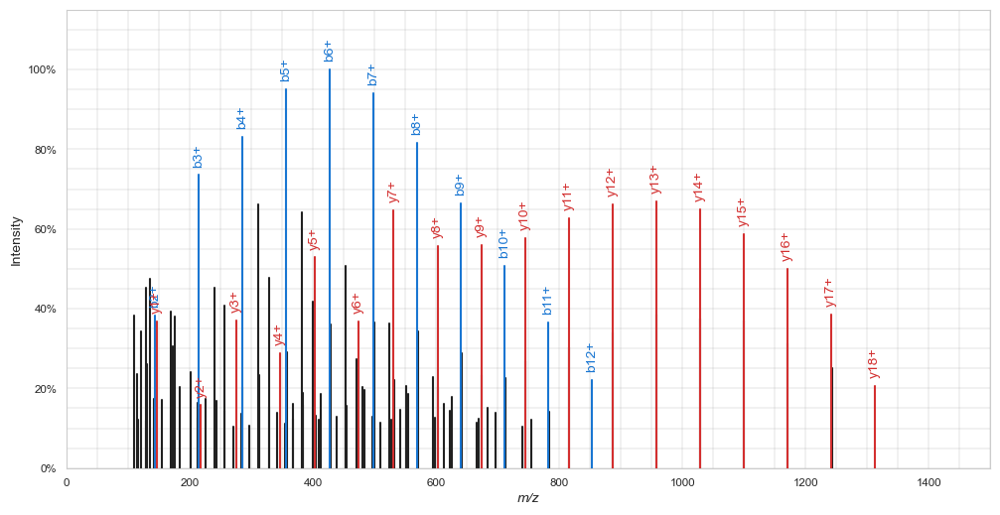
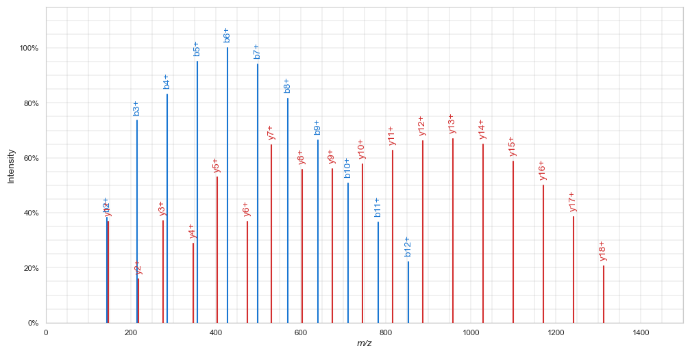
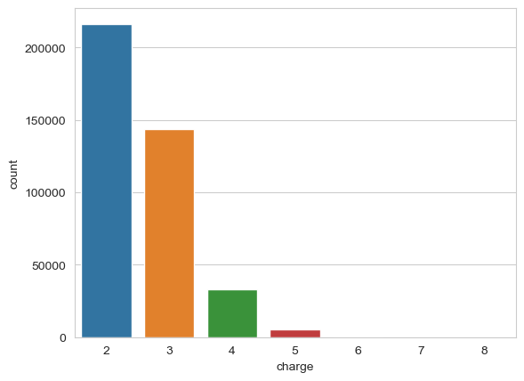
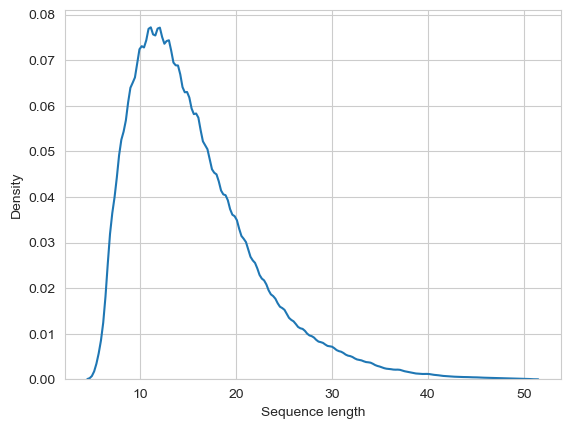
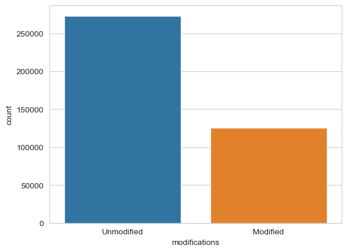
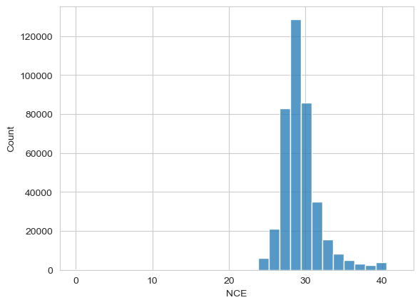
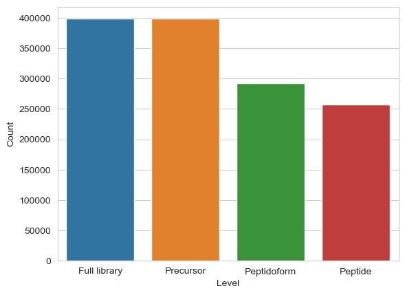

# Installing some required python packages
# ! pip install rich numpy pandas pyarrow matplotlib seaborn spectrum_utils==0.3.5 pyteomics sklearn hyperopt --quietNIST (part 1): Parsing the spectral library
Ralf Gabriels ![]()
In bottom-up proteomics, a peptide fragmentation spectrum (MS2) is the most central source of information to identify a peptide (and the original protein by extend). In traditional peptide fragment spectrum identification workflows, only the presence and location (x-axis) of peaks in the spectrum are used to identify the peptide that generated the spectrum. The intensity of these peaks (y-axis) are, however, seldomly used in a comprehensive manner. At most, traditional approaches naively assume that higher intensity is always better. The lack of usage of peptide spectrum intensity patterns in the identification step is mainly due to their complexity. The location of certain peaks (e.g., b- and y-ions) are easily calculated based on their mass for any given peptide. Their intensity, however, follows complex yet predictable patterns that cannot be simply calculated. Nevertheless, they can be predicted with machine learning.
In this tutorial you will learn the basic steps in developing a machine learning predictor for peptide fragmentation intensity prediction. The first chapter handles the preparation and parsing of training data and the second chapter first handles training a traditional machine learning model, and then a deep learning model.
To avoid an overly complex tutorial, some aspects to intensity prediction are simplified or not handled. For example, the resulting models will only be able to predict singly charged b- and y-ions for unmodified peptides.
1.1 Finding spectral libraries
Training data for peptide fragmentation spectrum intensity prediction consists of spectra that were already identified. The most convenient source of such information are spectral libraries. These are datasets that were compiled from a collection of mass spectrometry runs and usually consist of a single representative spectrum for each peptide that was identified.
Many precompiled spectral libraries are available online. You can also generate your own from a collection of proteomics experiments, using software such as SpectraST.
Spectral libraries can be downloaded, for instance, from NIST, the US National Institute of Standards and Technology . For this part of the practical, we will download the 2020 Human HCD library of “best” tryptic spectra. For ease-of-use, we will download it in the text-based NIST MSP format.
The following code cell automatically downloads and extracts the spectral library file using Linux commands. If you are working locally on a Windows machine, you can download and extract the files manually.
Note the exclamation marks in the code cell below, which allow us to run Linux commands, instead of Python.
# THIS CELL WORKS ONLY ON LINUX HOSTS (e.g. Google Colab)
# `wget` is a Linux command line tool to download files.
! wget -q https://chemdata.nist.gov/download/peptide_library/libraries/human/HCD/2020_05_19/human_hcd_tryp_best.msp.tar.gz
# Next, we need to unpack the .tar.gz file
! tar -xf human_hcd_tryp_best.msp.tar.gz'wget' is not recognized as an internal or external command,
operable program or batch file.
tar: Error opening archive: Failed to open 'human_hcd_tryp_best.msp.tar.gz'Let’s explore the MSP spectral library file, using the Linux head command:
! head human_hcd_tryp_best.msp'head' is not recognized as an internal or external command,
operable program or batch file.This shows the beginning of the first spectrum in the spectral library. Each spectrum entry consists of a header with identification data and metadata, and a peak list with three columns:
- m/z values
- intensity values
- peak annotation info
As the sequence of the first peptide is AAAAAAAAAAAAAAAGAGAGAK, we can assume that this library is ordered alphabetically. You can read through the file to verify this assumption. This ordering will be important later on.
1.2 Parsing the MSP spectral library file
Pyteomics is a Python package for proteomics that contains readers for many proteomics-related file formats. Unfortunately, MSP is not one of them. So first, we need a custom MSP reader function.
from rich import print, progress # Rich is a pretty cool library. Google it ;)
import numpy as np
import pandas as pdThis function iterates over each line in the MSP file. Once it has gathered all information for a single spectrum, it uses yield to return a dictionary. This means that we can iterate over the function using a for loop, and process spectra one-by-one.
If you do not fully understand the function, no problem! This is not the important part of the tutorial 😉
def read_msp(filename):
"""Iterate over MSP spectral library file and return spectra as dicts."""
spectrum = {}
mz = []
intensity = []
annotation = []
for line in open(filename, "rt"):
# `Name: ` is the first line of a new entry in the file
if line.startswith("Name: "):
if spectrum:
# Finalize and yield previous spectrum
spectrum["sequence"] = spectrum["Fullname"].split(".")[1] # Remove the previous/next amino acids
spectrum["mz"] = np.array(mz, dtype="float32")
spectrum["intensity"] = np.array(intensity, dtype="float32")
spectrum["annotation"] = np.array(annotation, dtype="str")
yield spectrum
# Define new spectrum
spectrum = {}
mz = []
intensity = []
annotation = []
# Extract everything after `Name: `
spectrum["Name"] = line.strip()[6:]
elif line.startswith("Comment: "):
# Parse all comment items as metadata
metadata = [i.split("=") for i in line[9:].split(" ")]
for item in metadata:
if len(item) == 2:
spectrum[item[0]] = item[1]
elif line.startswith("Num peaks: "):
spectrum["Num peaks"] = int(line.strip()[11:])
elif len(line.split("\t")) == 3:
# Parse peak list items one-by-one
line = line.strip().split("\t")
mz.append(line[0])
intensity.append(line[1])
annotation.append(line[2].strip('"'))
# Final spectrum
spectrum["sequence"] = spectrum["Fullname"].split(".")[1] # Remove the previous/next amino acids
spectrum["mz"] = np.array(mz, dtype="float32")
spectrum["intensity"] = np.array(intensity, dtype="float32")
spectrum["annotation"] = np.array(annotation, dtype="str")
yield spectrumLet’s explore the first spectrum:
# break allows us to only stop after the first spectrum is defined
for spectrum in read_msp("human_hcd_tryp_best.msp"):
print(spectrum["Name"])
breakAAAAAAAAAAAAAAAGAGAGAK/2_0
We can format the peak list as a Pandas DataFrame:
pd.DataFrame({
"mz": spectrum["mz"],
"intensity": spectrum["intensity"],
"annotation": spectrum["annotation"],
})| mz | intensity | annotation | |
|---|---|---|---|
| 0 | 110.071198 | 259243.203125 | ? 143/200 |
| 1 | 115.086403 | 97764.398438 | a2/-1.6ppm 145/200 |
| 2 | 116.070396 | 26069.500000 | ? 80/200 |
| 3 | 120.080597 | 208924.406250 | ? 148/200 |
| 4 | 129.065704 | 25535.900391 | Int/AG/-1.2ppm,Int/GA/-1.2ppm 86/200 |
| ... | ... | ... | ... |
| 112 | 1170.621338 | 442693.312500 | y16/-1.1ppm 180/200 |
| 113 | 1171.624146 | 173247.703125 | y16+i/-1.0ppm 133/200 |
| 114 | 1241.657959 | 264065.593750 | y17/-1.3ppm 170/200 |
| 115 | 1242.660156 | 112235.101562 | y17+i/-1.8ppm 125/200 |
| 116 | 1312.693848 | 74808.500000 | y18/-2.3ppm 116/200 |
117 rows × 3 columns
The left-most column denotes the peak annotation. This tells us which ion generated the peak, according to the search engine or library generation software. Note that many peaks — highlighted with a question mark — are not annotated, even though the spectrum was confidently identified.
Using the Python package spectrum_utils, we can easily visualize the spectrum:
import matplotlib.pyplot as plt
import spectrum_utils.spectrum as sus
import spectrum_utils.plot as supplt.figure(figsize=(12,6))
sup.spectrum(
sus.MsmsSpectrum(
identifier=spectrum["Name"],
precursor_mz=float(spectrum["Parent"]),
precursor_charge=int(spectrum["Charge"]),
mz=spectrum["mz"],
intensity=spectrum["intensity"]
)
)
plt.show()
1.3 Preparing spectra for training
To use a peptide fragmentation spectrum such as this one as training target for a machine learning model, it needs some preparation and parsing. Usually this comprises of the following steps:
- Normalize the intensities
- Transform the intensities
- Annotate the peaks
- Parse the relevant peak intensities to an format suitable for machine learning
For each of these steps, we will write a function that can be reused later on in the tutorial.
1.3.1 Normalize the intensities
Depending on the file format, peak intensities can range from 0 to 1, from 0 to 100, from 0 from 10 000… Machine learning algorithms require the target (and feature) values to be normalized in a specific range. For fragmentation spectra, there are two common options: total ion current (TIC) normalization and base peak normalization. For the former, all intensity values are divided by the total sum of all intensity values in the spectrum. The sum of all normalized intensities will be 1. For the latter, all intensity values are divided by the most intense peak in the spectrum, resulting in that peak to have normalized intensity 1. Here we will implement TIC-normalization.
def tic_normalize(msp_spectrum):
tic = np.sum(msp_spectrum["intensity"])
msp_spectrum["intensity"] = msp_spectrum["intensity"] / tic
return msp_spectrum# Before normalization
spectrum["intensity"][:10]array([259243.2, 97764.4, 26069.5, 208924.4, 25535.9, 361336.8,
120990.5, 401263.5, 54146.8, 259764.2], dtype=float32)spectrum = tic_normalize(spectrum)
# After normalization
spectrum["intensity"][:10]array([0.00882945, 0.00332971, 0.00088789, 0.00711566, 0.00086972,
0.0123066 , 0.00412076, 0.01366645, 0.00184416, 0.00884719],
dtype=float32)1.3.2 Transform the intensities
The distribution of peak intensities shows us that most peptide fragmentation peaks have a relatively low intensity, while only a few peaks are more intense:
import seaborn as sns
sns.set_style("whitegrid")
# Before transform
sns.displot(spectrum["intensity"], bins=20)
plt.show()
To make the intensities follow a more linear distribution — which is better for machine learning algorithms — we can transform the intensity values. Two methods are often used: square root-tranform, and log-transform. While both methods mostly have the same effect, we will here opt for square root transform, as log-transform results in negative values, which can be cumbersome to deal with.
def sqrt_transform(msp_spectrum):
msp_spectrum["intensity"] = np.sqrt(msp_spectrum["intensity"])
return msp_spectrumspectrum = sqrt_transform(spectrum)
# After transform
sns.displot(spectrum["intensity"], bins=20)
plt.show()
1.3.3 Annotate the peaks
With the NIST spectral libraries, this step is pretty easy, as peak annotations are already present. If this would not be the case, we can make use of spectrum_utils, which can annotate peaks given the peptide sequence and any modifications. See the spectrum_utils documentation for more info.
plt.figure(figsize=(12,6))
sup.spectrum(
sus.MsmsSpectrum(
identifier=spectrum["Name"],
precursor_mz=float(spectrum["Parent"]),
precursor_charge=int(spectrum["Charge"]),
mz=spectrum["mz"],
intensity=spectrum["intensity"],
peptide=spectrum["sequence"],
).annotate_peptide_fragments(25, "ppm")
)
plt.show()
1.3.4 Parse the relevant peak intensities to an format suitable for machine learning
Note in the visualization above that spectrum_utils only annotated b- and y-ions, while in the MSP file many other ion types are also annotated. For simplicity’s sake, in this tutorial we will train a model to only predict singly charged b- and y-ions.
Let’s filter the spectrum for only those peaks. This can be done with regular expressions (regex) and numpy. TIP: regex101.com is a great website for building and testing regular expressions. The regex ^(b|y)([0-9]+)\/ only matches peak annotations for singly charged b- and y-ions. You can investigate it at https://regex101.com/r/bgZ7EG/1.
In the following function, numpy.vectorize is used. What does it do and why do we use it here?
import re
def filter_peaks(msp_spectrum):
"""Filter spectrum peaks to only charge 1 b- and y ions."""
# Generate the boolean mask
get_mask = np.vectorize(lambda x: bool(re.match("^(b|y)([0-9]+)\/", x)))
mask = get_mask(msp_spectrum["annotation"])
# Apply the mask to each peak array
msp_spectrum["annotation"] = msp_spectrum["annotation"][mask]
msp_spectrum["mz"] = msp_spectrum["mz"][mask]
msp_spectrum["intensity"] = msp_spectrum["intensity"][mask]
return msp_spectrum
spectrum = filter_peaks(spectrum)plt.figure(figsize=(12,6))
sup.spectrum(
sus.MsmsSpectrum(
identifier=spectrum["Name"],
precursor_mz=float(spectrum["Parent"]),
precursor_charge=int(spectrum["Charge"]),
mz=spectrum["mz"],
intensity=spectrum["intensity"],
peptide=spectrum["sequence"]
).annotate_peptide_fragments(25, "ppm")
)
plt.show()
Now, the spectrum indeed only contains singly charged b- and y-ions. Note the nice gausian-like distributions of equally-distanced b- and y-ions. This is a feature specific for this peptide spectrum. Can you guess why? Tip: Take a look at the peptide sequence.
Currently, all peaks are listed together in single numpy arrays, sorted by m/z values. For training a machine learning model, we need the intensity values in a more suitable structure. As we are planning to only predict simple singly charged b- and y-ions, we can create two arrays — one for each ion type — with the ions sorted by ion number:
parsed_intensity = {
"b": [b1, b2, b3, b4 ... bN],
"y": [y1, y2, y3, y4 ... yN]
}where N is the total number of possible fragments for that peptide sequence. Quick question: What value will N have for our peptide with sequence AAAAAAAAAAAAAAAGAGAGAK?
The following function builds upon the filter_peaks function to not only filter the correct ion types, but also order them properly:
def parse_peaks(msp_spectrum, ion_type):
# Generate vectorized functions
get_ions = np.vectorize(lambda x: bool(re.match(f"^({ion_type})([0-9]+)\/", x)))
get_ion_order = np.vectorize(lambda x: re.match(f"^({ion_type})([0-9]+)\/", x)[2])
# Get mask with requested ion types
mask = get_ions(msp_spectrum["annotation"])
# Create empty array with for all possible ions
n_ions = len(msp_spectrum["sequence"]) - 1
parsed_intensity = np.zeros(n_ions)
# Check if any ions of this type are present
if mask.any():
# Filter for ion type and sort
ion_order = get_ion_order(msp_spectrum["annotation"][mask]).astype(int) - 1
# Add ions to correct positions in new array
parsed_intensity[ion_order] = msp_spectrum["intensity"][mask]
try:
msp_spectrum["parsed_intensity"][ion_type] = parsed_intensity
except KeyError:
msp_spectrum["parsed_intensity"] = {}
msp_spectrum["parsed_intensity"][ion_type] = parsed_intensity
return msp_spectrum
spectrum = parse_peaks(spectrum, "b")
spectrum = parse_peaks(spectrum, "y")spectrum['parsed_intensity']{'b': array([0. , 0.0940595 , 0.18064232, 0.20420307, 0.23347196,
0.2457854 , 0.23112106, 0.20064339, 0.16306745, 0.1246587 ,
0.08999325, 0.05416884, 0. , 0. , 0. ,
0. , 0. , 0. , 0. , 0. ,
0. ]),
'y': array([0.09027135, 0.03876459, 0.09092397, 0.07086667, 0.1299265 ,
0.09038813, 0.15890096, 0.13701038, 0.13768263, 0.14171469,
0.15388304, 0.16281605, 0.16425258, 0.15970773, 0.1443574 ,
0.12279043, 0.09483507, 0.05047642, 0. , 0. ,
0. ])}Great! These values are now ready to be used as prediction targets for a machine learning algorithm.
1.4 Parse the full spectral library
Now that all functions for spectrum preparation are written, we can parse the full spectral library. Let’s first explore some of the basic statistics of this library.
1.4.1 Exploring basic spectral library statistics
Total number of spectra
This one is easy, we quickly scan the number of lines starting with Name: in the file:
def msp_count_spectra(filename):
"""Count number of spectra in MSP file."""
count = 0
for line in open(filename, "rt"):
if line.startswith("Name: "):
count += 1
return count
n_spectra = msp_count_spectra("human_hcd_tryp_best.msp")
print(n_spectra)398373
For more statistics, we will have to read the full library. One advantage we have now, is that knowing the total number of spectra allows us to track the progress of reading the full MSP file (progress.track). To limit the amount of data we keep in memory (this full MSP file is almost 2GB!), we can process the intensity values of each spectrum while parsing and only keep the parsed data:
spectrum_list = []
for msp_spectrum in progress.track(
read_msp("human_hcd_tryp_best.msp"),
total=n_spectra,
description="Parsing MSP file..."
):
# Process intensities
msp_spectrum = tic_normalize(msp_spectrum)
msp_spectrum = sqrt_transform(msp_spectrum)
msp_spectrum = parse_peaks(msp_spectrum, "b") # Adds `parsed_intensity` > `b`
msp_spectrum = parse_peaks(msp_spectrum, "y") # Adds `parsed_intensity` > `y`
# Parse metadata
spectrum = {
"sequence": msp_spectrum["sequence"],
"modifications": msp_spectrum["Mods"],
"charge": int(msp_spectrum["Charge"]),
"nce": float(msp_spectrum["NCE"]),
"parsed_intensity": msp_spectrum["parsed_intensity"]
}
# Append to list
spectrum_list.append(spectrum)c:\Users\ralfg\miniconda3\envs\proteomicsml\lib\site-packages\rich\live.py:229: UserWarning: install "ipywidgets"
for Jupyter support
warnings.warn('install "ipywidgets" for Jupyter support')
Generating a Pandas DataFrame from the list of spectrum dictionaries, allows us to easily explore the full dataset:
spectrum_df = pd.DataFrame(spectrum_list)
spectrum_df| sequence | modifications | charge | nce | parsed_intensity | |
|---|---|---|---|---|---|
| 0 | AAAAAAAAAAAAAAAGAGAGAK | 0 | 2 | 29.43 | {'b': [0.0, 0.09405950456857681, 0.18064232170... |
| 1 | AAAAAAAAAAAAAAAGAGAGAK | 0 | 3 | 29.22 | {'b': [0.0, 0.21546243131160736, 0.21998108923... |
| 2 | AAAAAAAAAAAPPAPPEGASPGDSAR | 0 | 2 | 27.80 | {'b': [0.0, 0.0, 0.056045547127723694, 0.10302... |
| 3 | AAAAAAAAAAAPPAPPEGASPGDSAR | 0 | 3 | 30.00 | {'b': [0.0, 0.04407356679439545, 0.07545641809... |
| 4 | AAAAAAAAAASGAAIPPLIPPR | 0 | 3 | 0.00 | {'b': [0.0, 0.10330961644649506, 0.15637055039... |
| ... | ... | ... | ... | ... | ... |
| 398368 | YYYYHR | 0 | 2 | 30.20 | {'b': [0.0, 0.14489535987377167, 0.0, 0.0, 0.0... |
| 398369 | YYYYHR | 0 | 3 | 37.52 | {'b': [0.018267542123794556, 0.076188296079635... |
| 398370 | YYYYMWK | 0 | 2 | 31.00 | {'b': [0.0, 0.22406582534313202, 0.11588517576... |
| 398371 | YYYYMWK | 1(4,M,Oxidation) | 2 | 30.00 | {'b': [0.0, 0.14110229909420013, 0.0, 0.0, 0.0... |
| 398372 | YYYYWHLR | 0 | 3 | 36.22 | {'b': [0.0, 0.0886630266904831, 0.0, 0.0, 0.0,... |
398373 rows × 5 columns
Making a Pandas DataFrame out of spectrum_list is so simple because it is a list of consistent dictionaries.
Precursor charge state
A different precursor charge state can heavily alter peptide fragmentation. It is therefore important to have a representative amount of peptide spectra for each charge state in the spectral library.
sns.countplot(data=spectrum_df, x="charge")
plt.show()
Peptide length
Idem for the length of the peptide sequence. It usually makes sense to filter the train dataset for peptides within a certain length range.
sns.kdeplot(spectrum_df["sequence"].str.len())
plt.xlabel("Sequence length")
plt.show()
spectrum_df["sequence"].str.len().describe()count 398373.000000
mean 15.541467
std 6.506968
min 6.000000
25% 11.000000
50% 14.000000
75% 19.000000
max 50.000000
Name: sequence, dtype: float64(spectrum_df["sequence"].str.len() > 35).value_counts()False 393429
True 4944
Name: sequence, dtype: int64For this dataset, the minimum peptide length is 6, while the maximum is 50. Nevertheless, only
Peptide modifications
Likewise, peptide modifications can influence peptide fragmentation. How many of the spectra in our library come from modified peptides?
modification_state = (spectrum_df["modifications"] == "0").map({True: "Unmodified", False: "Modified"})
sns.countplot(x=modification_state)
plt.show()
Collision energy
sns.histplot(spectrum_df["nce"], bins=30)
plt.xlabel("NCE")
plt.show()
Note the range of the x-axis, which was automatically chosen by the plotting library. It seems to start at 0, which indicates that some values are very low…
(spectrum_df["nce"] == 0.0).value_counts()False 398103
True 270
Name: nce, dtype: int64Indeed, it seems that some peptide spectra have collision energy (CE) 0, which most likely means that the true collision energy setting is not known. We can either opt to not use CE as a feature for training, or to remove these spectra from the dataset. Including these values would introduce unwanted noise in the training data.
Duplicate entries?
An important aspect to compiling training data for machine learning is whether or not entries are duplicated. With spectral libraries, matters are complicated by multiple levels of “uniqueness”:
- Peptide level: Unique sequence
- Peptidoform level: Unique sequence & modifications
- Precursor level: Unique sequence & modifications & charge
More parameters can be included for “uniqueness”, such as instrument and acquisition properties: CE, fragmentation method (beam-type CID (“HCD”), trap-type CID, ETD, EAD…), acquisition method (Orbitrap, ion trap, TOF…). In this tutorial, we are using only HCD Orbitrap data, which makes things a bit simpler. Nevertheless, this will impact the application domain of the final models.
counts = pd.DataFrame({
"Level": [
"Full library",
"Precursor",
"Peptidoform",
"Peptide",
],
"Count": [
spectrum_df.shape[0],
spectrum_df[["sequence", "modifications", "charge"]].drop_duplicates().shape[0],
spectrum_df[["sequence", "modifications"]].drop_duplicates().shape[0],
spectrum_df["sequence"].unique().shape[0],
],
})sns.barplot(data=counts, x="Level", y="Count")
plt.show()
counts| Level | Count | |
|---|---|---|
| 0 | Full library | 398373 |
| 1 | Precursor | 398373 |
| 2 | Peptidoform | 292061 |
| 3 | Peptide | 257202 |
Seems like this library was filtered for uniqueness on the precursor level.
1.4.1 Selecting data
For selecting training data, we will apply some additional filters:
- While plain amino acid sequences are straightforward to encode, peptide modifications complicate matters. For simplicity’s sake, we will therefore not open the “can of modifications” in this tutorial.
- As we might want to use CE as a feature, we can remove the small amount of entries that are missing the a CE value
- To make the training task a bit less complex, we can limit peptide length to 35. Although the maximum peptide length in this library is 50, only 4944 spectra have a peptide length of over 35.
spectrum_df = spectrum_df[
(modification_state == "Unmodified") &
(spectrum_df["sequence"].str.len() <= 35) &
(spectrum_df["nce"] != 0)
]Let’s see how many spectra we retained:
spectrum_df.shape[0]270440spectrum{'sequence': 'YYYYWHLR',
'modifications': '0',
'charge': 3,
'nce': 36.22,
'parsed_intensity': {'b': array([0. , 0.08866303, 0. , 0. , 0. ,
0. , 0. ]),
'y': array([0.16996175, 0.12056533, 0.16980277, 0.20397678, 0.18093778,
0.09508998, 0. ])}}1.4.2 Train / validation / test split
Now that we have our data, we can filter it to a final set for training and validation and a final set for testing. A small reminder of what these terms mean:
- Training data: For training the model
- Validation data: For validating the model while optimizing hyperparameters
- Testing data: For final testing of model that was trained with the best hyperparameters (according to the validation data), right before deployment
The testing data cannot be used until a final model is trained, and serves as a last test before deployment. It should not be used before a final model is selected.
from sklearn.model_selection import train_test_split
np.random.seed() # Why is this needed?
train_val_peptides, test_peptides = train_test_split(spectrum_df["sequence"].unique(), train_size=0.9)
train_val_spectra = spectrum_df[spectrum_df["sequence"].isin(train_val_peptides)]
test_spectra = spectrum_df[spectrum_df["sequence"].isin(test_peptides)]Question: Why do we not apply train_test_split() directly on spectrum_df, but instead on spectrum_df["sequence"].unique()?
This work is licensed under a Creative Commons CC-BY 4.0 license.